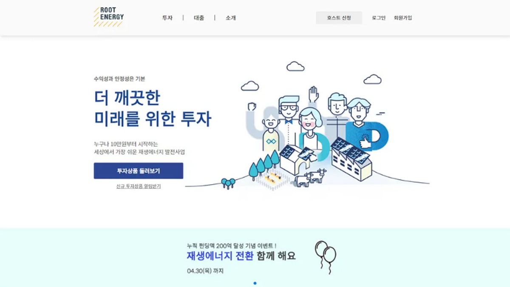
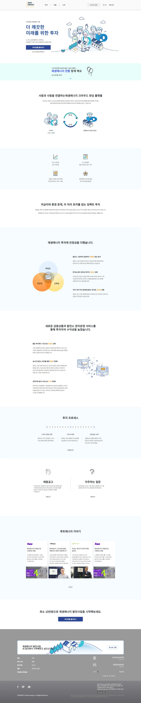
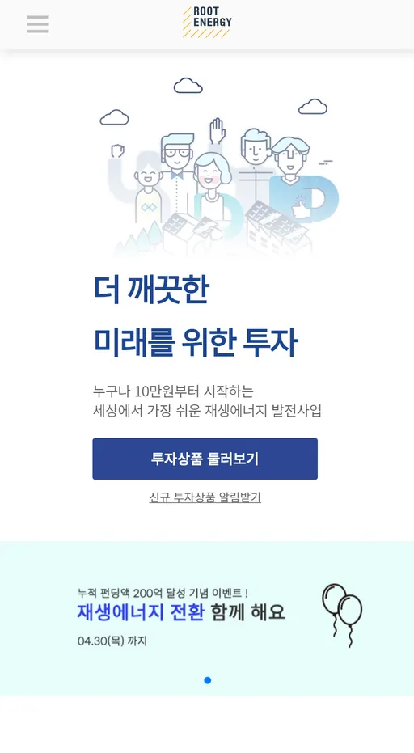

루트에너지
Overview
| 프로젝트 기간 | 2017.01.07 - 2018.01.09 |
|---|---|
| 프로젝트 참여율 | 약 50% |
Details
- 프로젝트 배경
- 회사 홈페이지 구축 시, 사용자 페이지와 관리자(Admin) 페이지 동시 개발 필요
- 단순 정적 페이지 구현을 넘어, React 기반 구조 학습 및 실무 적용을 목표
- 사용자와 관리자 모두의 경험을 개선할 수 있는 UI/UX 중심 퍼블리싱 요구
- 작업 범위
- 사용자/관리자(Admin) 페이지 전체 퍼블리싱 및 일부 프론트엔드 작업
- React 기반 컴포넌트 단위 개발 방식 학습 및 실무 적용
- UI 개선 및 인터랙션 구현을 통한 사용자 편의성 강화
- 프로젝트 초기 구축부터 유지보수까지 전반적인 참여
- 성과 / 특징
- 어드민 페이지까지 포함한 퍼블리싱 경험 확보 → 다양한 사용자 환경에 대한 이해도 향상
- UI 및 인터랙션 개선을 통한 사용자 만족도 상승 및 관리자 업무 효율 개선
- React 기반 퍼블리싱 및 기능 구현 경험 → 기술 확장성과 개발 협업 역량 강화
- 프로젝트 전 과정에 참여하며 사이트 완성도 및 유지보수 안정성 향상
Screenshot
-

루트에너지 메인 화면 - 반응형 구조
-

루트에너지 메인 모바일 화면 - 반응형 구조